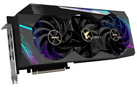

Bienvenido a nuestra guía sobre los componentes de una PC. En esta página, exploraremos los elementos fundamentales que conforman una computadora, desde el poderoso procesador hasta la fiel fuente de alimentación. Descubre cómo cada componente juega un papel crucial en el rendimiento y la funcionalidad de tu equipo, y obtén consejos útiles para seleccionar los mejores componentes según tus necesidades y presupuesto. ¡Sumérgete en el fascinante mundo de la tecnología de la información y prepárate para construir tu propia PC a medida!
El procesador, también conocido como CPU, es el cerebro de tu computadora. Es responsable de ejecutar programas y realizar cálculos en milisegundos. Dos de los principales fabricantes de procesadores son Intel y AMD, y ambos ofrecen una amplia gama de modelos con diferentes especificaciones. Al elegir un procesador, es importante considerar factores como el número de núcleos, la velocidad de reloj y la cantidad de caché, así como la arquitectura del procesador y tus necesidades de rendimiento.

La placa madre es el núcleo de una PC, conectando todos los componentes y facilitando la comunicación entre ellos. Incluye elementos como el socket del procesador, ranuras de memoria RAM, puertos de expansión y conectores de almacenamiento. Hay varios tipos disponibles, como ATX, Micro-ATX y Mini-ITX, que varían en tamaño y características. La elección adecuada es crucial para garantizar la compatibilidad y capacidad de actualización de la PC, considerando aspectos como tamaño, características y puertos disponibles.

La memoria RAM, o memoria de acceso aleatorio, es un componente esencial en una PC. Funciona como la memoria de trabajo del sistema, almacenando datos y programas que se están utilizando actualmente para que el procesador pueda acceder a ellos rápidamente. La RAM es crucial para el rendimiento general de la computadora, ya que afecta la velocidad a la que se ejecutan las aplicaciones y tareas. Al elegir RAM, es importante considerar la capacidad y la velocidad, así como la compatibilidad con la placa madre y el procesador. La cantidad de RAM necesaria dependerá del tipo de aplicaciones que uses y la carga de trabajo que tengas, pero generalmente se recomienda tener al menos 8 GB para un rendimiento óptimo en la mayoría de las situaciones.

La tarjeta gráfica, también conocida como GPU, es un componente esencial en una PC, especialmente para tareas relacionadas con gráficos y juegos. Se encarga de procesar y renderizar imágenes en la pantalla, lo que incluye todo, desde la interfaz de usuario hasta los gráficos en 3D. La GPU tiene su propia memoria dedicada, llamada VRAM, que almacena los datos de imagen temporales para un acceso rápido. Al elegir una tarjeta gráfica, es importante considerar factores como el rendimiento, la memoria VRAM, la compatibilidad con la placa madre y el procesador, así como el presupuesto disponible. Para juegos y aplicaciones exigentes, se recomienda una tarjeta gráfica potente con suficiente VRAM para manejar las cargas de trabajo más pesadas.
El almacenamiento en una PC se refiere a los dispositivos para guardar datos, como discos duros (HDD) y unidades de estado sólido (SSD). Los HDD son económicos y ofrecen más capacidad, pero son más lentos. Las SSD son más rápidas y duraderas, aunque más caras y con menos capacidad. La elección depende de tus necesidades de almacenamiento, rendimiento y presupuesto. Otros tipos incluyen unidades híbridas y almacenamiento en la nube. Considera la capacidad, velocidad y confiabilidad al elegir un dispositivo de almacenamiento.
Las fuentes de alimentación proporcionan energía a una PC. Se presentan en diferentes tamaños y formas, como ATX y SFX. Es importante elegir una con suficiente potencia para todos los componentes. La eficiencia energética, medida por la certificación 80 Plus, ayuda a reducir los costos a largo plazo. Considera la capacidad de potencia, eficiencia, seguridad y presupuesto al elegir una fuente de alimentación.